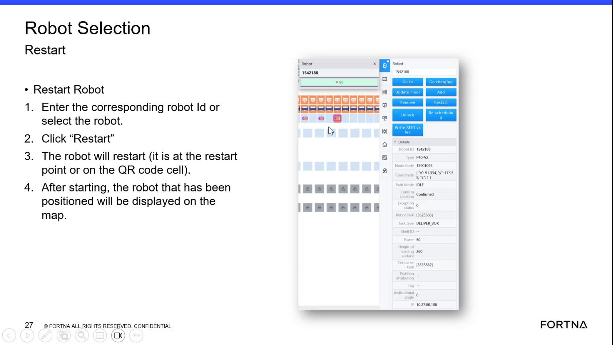

| Procedure ID | proc_verify_an_agb_floor_location_using_node_code_or_cell_code_v1 |
|---|---|
| Title | Verify An AGB Floor Location Using Node Code Or Cell Code |
| Procedure Type | reference |
| Primary Role | operator |
| Support Safe | Yes |
| Validation Status | needs_sme_review |
| Merge Status | source_finalized |
Use the node code or cell code for an AGB location to verify the physical floor location by matching it to the physical number on the floor QR code, then confirm or communicate that location.
Use when you need to verify where an AGB is physically located on the floor, or when you need to direct another person to that location using the node code or cell code that matches the floor QR code number.
Responsible role: operator
Instruction:
Obtain the node code or cell code for the AGB location from the available location reference.
Expected result:
A node code or cell code is available for comparison.
Screens / Images:

Stop or Escalate If:
Responsible role: operator
Instruction:
Go to the floor location and find the QR code marking with its physical number.
Expected result:
The floor QR code marker and its physical number are visible.
Screens / Images:
Stop or Escalate If:
Responsible role: operator
Instruction:
Compare the node code or cell code to the physical number on the floor QR code.
Expected result:
You determine whether the node code or cell code matches the floor QR code number.
Screens / Images:
Stop or Escalate If:
Responsible role: operator
Instruction:
Verify that the AGB is at the matching location, or communicate that location to another person using the matched code.
Expected result:
The AGB location is confirmed or clearly communicated using the matched node code or cell code and floor QR code number.
Screens / Images:
Stop or Escalate If: